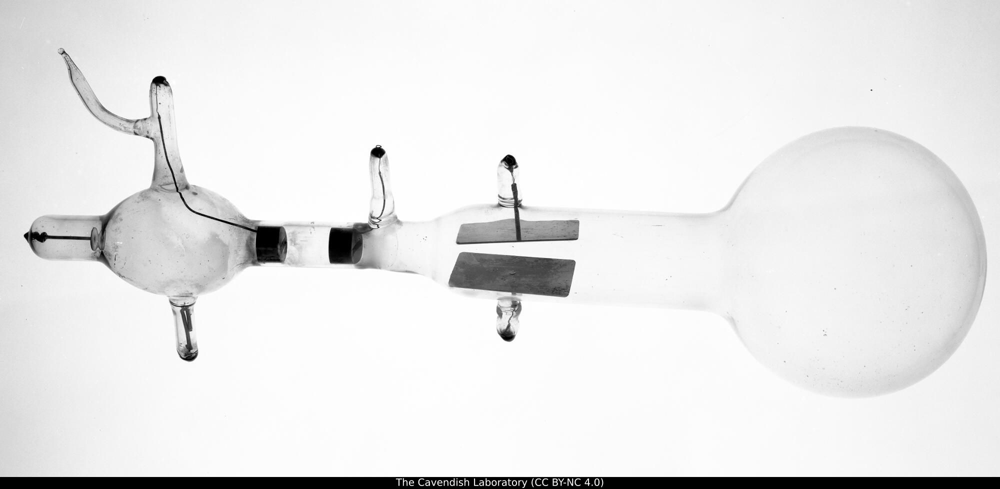
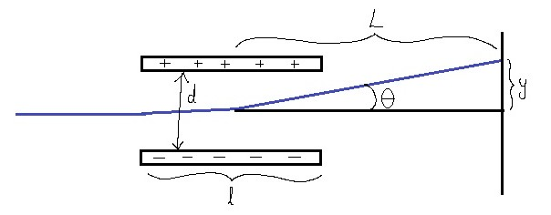
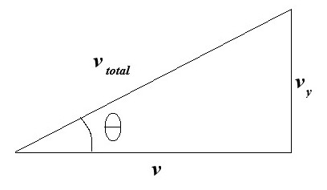

Originally discovered by physicist J. J. Thomson who published his findings in 1897.
In Thomson's 1897 paper, he was originally searching for the mass-to-charge ratio of particles contained within cathode rays (nobody knew they were electrons yet.) He ascertained the ratio using two independent methods. His first method involved deflection of the rays using a magnetic field. The second method involved deflection with an electric field, and then using a magnetic field to cancel out that deflection (thus allowing us to equate magnetic force with electrostatic force). If you would like to read the original paper, you can download a .pdf version of it here or read it entirely in your web browser here.

Let's begin with a simplified drawing and define the relevant geometric variables.

The electric field between two charged parallel plates is:
For as long as the electrons are traveling between the two plates, they accelerate in the y-direction due to the electrostatic force:
How long will electrons be traveling between the two plates? It depends on the initial horizontal velocity:
Initially, the electrons only had a horizontal velocity. As they traveled between the charged plates, the electrostatic force accelerated them vertically along the y-axis. Now, they have acquired a vertical velocity component:
So, we have the vertical velocity of the cathode rays after they leave the area between the charged plates. This results in a total velocity vector with a vertical component vy and a horizontal component v which was the initial horizontal velocity of the cathode ray. From SOH CAH TOA, we know there is the following trigonometric relationship between v and vy:

Now, refer back to the initial diagram for the entire setup. Notice that there is another trigonometric relationship present, between the beam deflection y and the distance from the center of the charged plates to the screen L, giving us:
After all this work, we still can't calculate q/m because we don't know what the velocity v is. What do we do? Well, it is at THIS point that Thomson applied a magnetic field B perpendicular to the direction of the electric field. Based on the right hand rule (thumb pointing in the direction of the cathode ray velocity, pointer finger in the direction of B, and middle finger showing the direction of the magnetic force), we see that the negatively charged particles will be deflected down. Thomson tuned the magnetic field so the downward magnetic force FB would cancel out the upward FE (the two forces then being EQUAL in magnitude) and the beam returned to its straight line path.
Substitute this value for v into the equation for y from before:
We're home free! Just isolate the q/m and replace the general charge symbol q with the charge of an electron e:
And there you have it! The charge-to-mass ratio calculated with Thomson's original cathode ray tube setup, as described in the 1897 paper. (Actually, he was trying to ascertain the mass-to-charge ratio, but it's the same thing basically.) Hopefully, you found this helpful. Not long after this, in 1909, Robert Milikan began his famous oil drop experiment and, using the known e/m ratio, figured out the charge of a single electron, which we call the "elementary charge"! On top of that, he realized that charge was quantized: the charge of any object is always some multiple of the elementary charge, never a fraction of it! (Quarks kind of messed that up.)